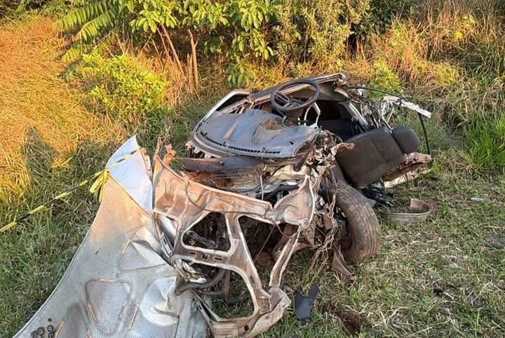

Tragédia na madrugada: Batida entre Gol e carreta mata homem de 37 anos na PR-158
Por: Fabricio Bovaroli
Na madrugada do dia 28/09 na PR-158 no KM418 , por voltas 4 horas da manhã, ocorreu um grave acidente no trecho que liga Rio Bonito do Iguaçu à Laranjeiras do Sul, onde um condutor de um veiulo Gol acabou colidindo com uma carreta e acabou perdendo vida no local exato.